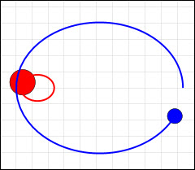
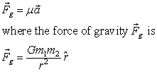
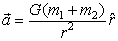

Two-bodies with different masses orbit about their common center of mass.
Because two objects (e.g., a star and a planet) with masses m1 and m2 interacting gravitationally orbit a common center of mass, we can determine their relative positions of the objects if their mass ratio is known. Placing the center of mass (barycenter) at the center of the coordinate system, the ratio or the distance from the center is inversely proportional to the object mass ratio r2/r1=m1/m2 where r=r1+r2 is the separation. In other words, if m1 is twice as massive as m2, then the two objects will be on opposite sides of the origin and m1 will be half as far from the origin as m2. This ratio relation is also observed when using a lever or seesaw to balance two masses.
The elliptical motion of two gravitationally attracting objects about their center of mass is a classical mechanics problem and was first solved by Newton. This two-body problem can be re-formulated as the motion of a single object with a mass μ=m1*m2/(m1+m2) that is attracted toward the origin and obeys Newton's second law:

Substituting for μ gives the following differential equation for the separation vector r.

The choice of units determines the numerical value of the gravitational constant G. In this simulation, we compute the orbit using time in Earth years and distance in Earth radii (astronomical units). Using these units, the value of G is 4π^2 rather than the MKS value of 6.67300 × 10-11 m^3/kg/s^2.